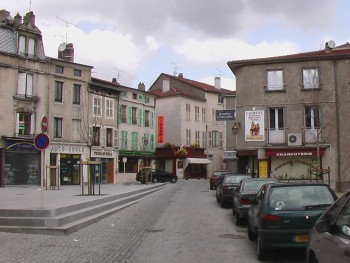
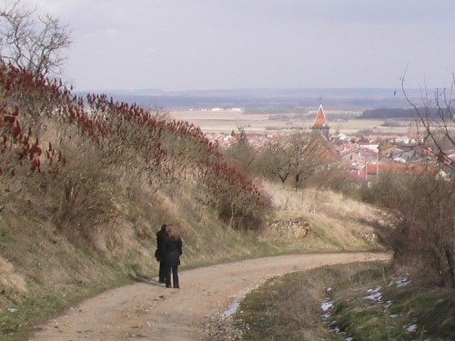

Am 13. März
2005 ging unsere Entdeckungsreise weiter, dieses Mal die kleine Stadt
von Toul, wo wir nach dem Stadtrundgang noch einen Spaziergang durch
die vor den Stadtmauern liegenden Weinberge anhingen.

Bei freundlichem Sonnenschein schlenderten
wir durch die kleinen Straßen und besichtigten dabei auch die
Kathedrale.
Später schauten wir uns noch den
Innenhof eines Gebäudes an, was es genau war, keine Ahnung mehr.
Dafür kann ich mich noch sehr gut an das Hündchen erinnern,
welches uns so "glücklich" zubellte! =)

Im
März verabschiedete sich der Winter in Frankreich, und die ersten
grünen Knospen streckten sich gen Sonne.